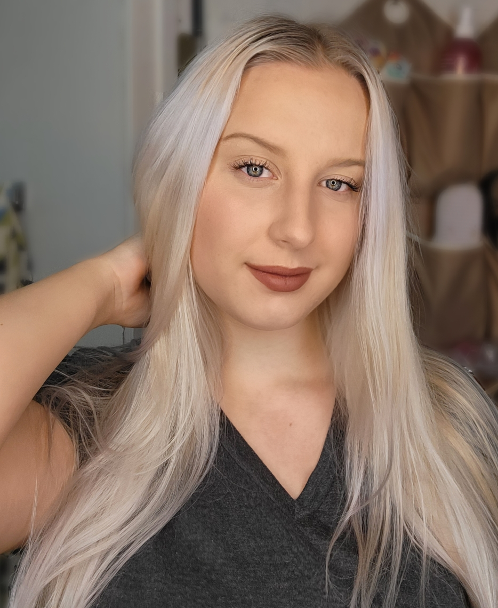
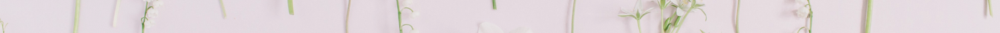
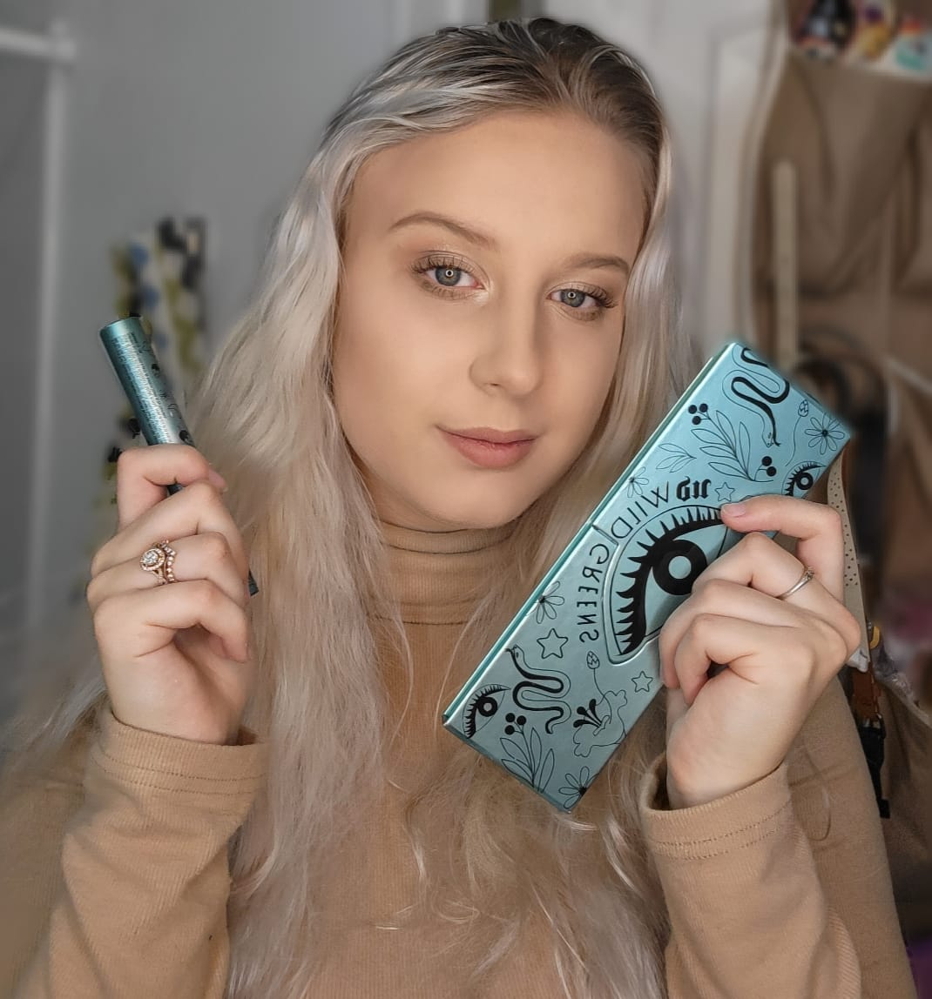

I do makeup for all special events including but not limited to Bridal, Prom, Photoshoots, Girls Nights, Date Nights, etc.
Here you are able to find all of the information you need in order to confidently book me for your next special event.
Please contact me if you have any further questions that have not been answered here.

I charge $35 plus a $5 upcharge if I supply lashes.
I will travel to do makeup but I do charge a driving fee. Please contact me for a direct quote.

Foundations
"The Ordinary" Serum Foundation
I purchased 7 of these foundations for myself to try and to also add to my collection to use on clients.
They retail for $6.70 per foundation and 7 of them came out to around $51 which is remarkable considering
I can buy a single high-end foundation for that price. This foundation is extremely light-weight and sits nicely on the skin.
I have tried many high end foundations such as Huda Beauty "Faux Filter", Fenty Beauty, etc. and I actually like this foundation
better than all of them. The Ordinary Foundation is very thin so it does not offer full coverage upon the first application but
it is very layerable and does not get heavy or cakey when you do so. I would suggest a good pore filling primer especially if you have large
pores like myself because it does tend to settle in them. This foundation is all vegan and is made with Japanese super foods so if you are acne
prone it will help with that. I have noticed my skin clearing up while using this product.
Eyeshadow Palettes
"Wild Greens" by Urban Decay
I have used a lot of Urban Decay eyeshadow palettes and I love all of them especially the "Naked Cherry" palette so I was VERY excited
to recieve this in an Influenster box. I opened it up and I want to start by saying that the packaging is absolutly stunning and so are the pigments. BUT,
as far as how the pigments performed I was very let down. The green vanished as soon as I started blending and so did the pink shades. I started looking closer and the pink shades actually looks almost identical to those in the Naked Cherry palette. The shimmers were nice and pretty creamy but also not a huge pay off. You could do the same look or a better look using just the Naked Cherry pallete and maybe another one if you want to use the greens but for a palette called "Wild Greens" there certainly was not alot of green included.

Mascaras
"Wild Lash" by Urban Decay
The "Wild Lash" mascara by Urban Decay was an accidental find as I recieved it free through PR with influenster.
I have stuggle for years to find a mascara that truly works for me and with this one I believe I did.
The problem I have always had with mascaras is that they bleed and give me raccoon eyes because of how sensitive my eyes are.
"Wild Lash" did not move at all and I even had it on my bottom lash line. Because it did not budge I was thinking it would be
hard to take off but it was the exact oppisite and came of easier than any mascara i had tried before. it didnt smear across my
face it just simply removed with warm water on a wash cloth. They sent me a full size product but I will be repurchasing when I
run out for the simple fact of no raccoon eyes. This products costs $26 which is not that bad for a brand as well known as Urban Decay.